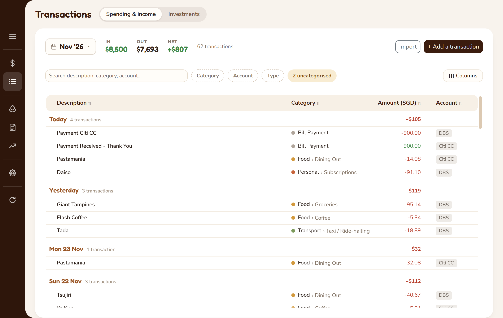
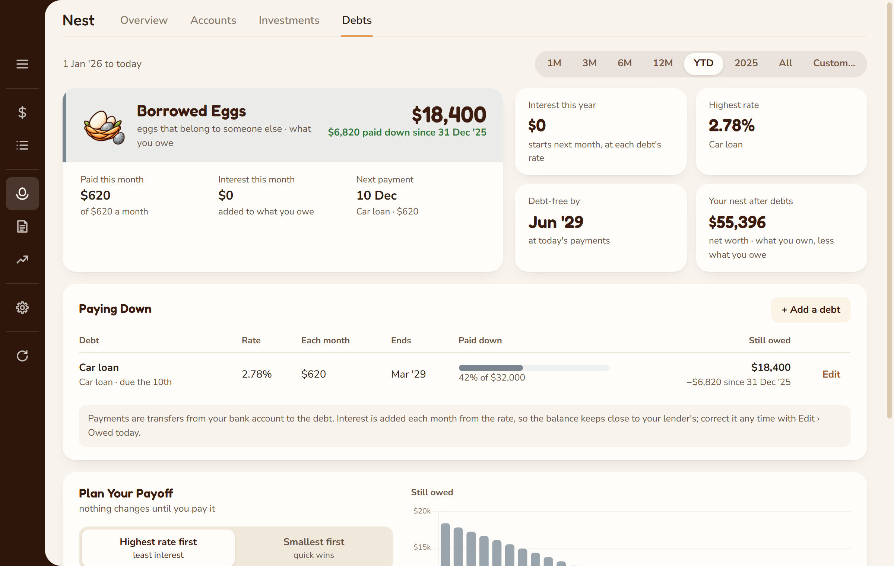
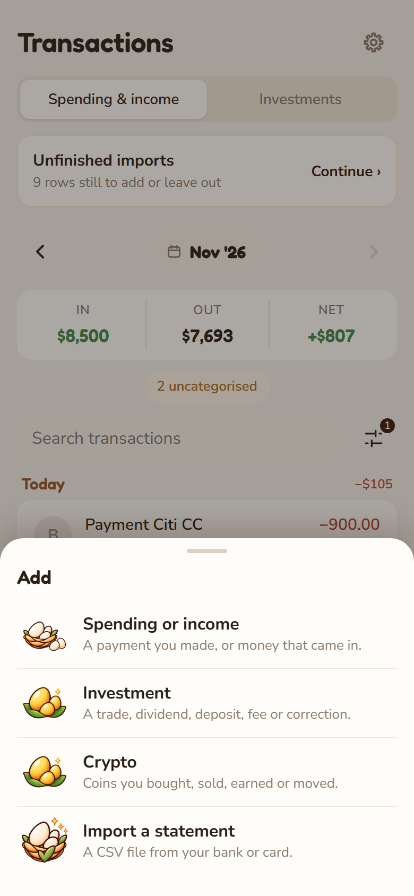
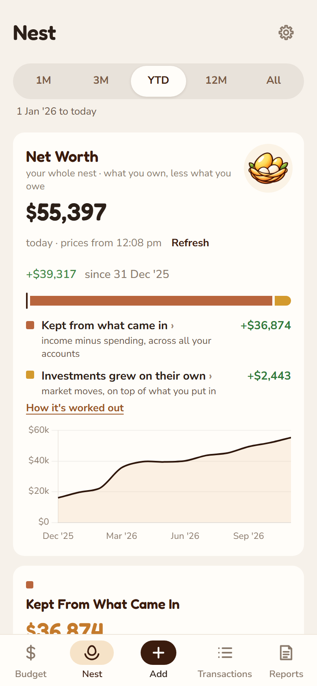

Everything in one calm place.
Budget, transactions, your nest (accounts, investments and debts) and reports, on Windows and Android. Desktop marks what lives on the computer only; everything else is on both. The phone isn't a shrunk desktop: it's built for a quick look on the go, and the deep digging stays on the big screen.
Plan with the money you have.
Give every dollar that comes in a job, and see what's left in each category as the month goes.

Ready to place
Money that comes in waits here until you give it a place. When nothing is left to place, every dollar has a job; what you don't spend carries into next month.
Placed, spent, left
For every category. Overspend one and the Budget shows what it costs the rest, so the numbers always add up.
Move money
Between categories when plans change, on the computer or the phone.
Monthly targets
Per category, and savings goals on the categories you already have: it says what to place each month to have it on time, warms as you save, hatches when it's all there, and spending it later is never shown as overspending.
Money age
How long money sits before it's spent. Older is calmer.
Placed vs Spent
For your finished months, up to 24 at a time: what ran out, what your saving paid for, where spending left the plan, and a slide-out with each line's story Desktop, drag categories into your own order, and retire one-off categories (a trip, a wedding) once they're done.
Your bank's own statements, read for you.
Bring in the statements your bank already gives you, check them, and keep every payment in its place.

Import CSV statements
On the computer or the phone: each file is recognised by its columns and checked before anything is added: money in and out, rows that couldn't be read, and the balance column when there is one. Some banks' files work straight away, from layouts that come with the app; a new layout takes four quick questions, once.
Any other bank
Set up its layout once (the app suggests which column is which) and every statement like it is read by itself. On the phone that's four quick questions, one per screen. On the computer it can also suggest the layout with AI using your own API key (see privacy).
One button when there's nothing to check
A statement read for sure, with every row already given a category, is added in one go. Otherwise you review just the rows that need it.
Review at your own pace
Rows already in Transactions are held back, categories come from how you tagged similar spends before, and the ones you pick can be remembered for next time. Start on one device and finish on the other: every pick carries over. Or take a whole import back out.
One month at a time
On the computer as on the phone, with its In, Out and Net on top. Filters are chips you can see at a glance, and one chip takes you to whatever still needs a category.
Split
One payment across categories; search, filter and edit everything in place.
Transfers
Money moved between your own accounts stays a transfer, never counted as spending.
Add in a few taps
The Add button in the middle of the tab bar logs a spend, income or an investment in a few taps, or imports a statement.
Everything you own, less what you owe.
Your net worth today and over time, and exactly how it changed.

Net worth
Today and over time, for the last month, quarter, year or since you started.
How it changed, to the dollar
How much you kept from what came in, how much your investments grew on their own, and what CPF or other retirement money added, each with its own card that adds up. Rest the pointer on a main figure (it has a faint dotted underline) and How it's worked out shows the sum; on the phone, tap How it's worked out under it. There is one savings rate everywhere: what you kept, of what came in.
Plain groups
Cash for everyday spending, Savings saved for goals, Investments, money locked away (CPF, insurance cash value) and what you've borrowed.
Every account in one place
Nest › Accounts: Cash, Savings & Investments, and What You Owe (cards and loans), with the group totals on top. Click an account to see its months, holdings and where its money comes in from, beside the list.
Your own groups of accounts
Like "Saving for a home": what they held, what you put in and what grew on its own, on the computer and the phone.
Nothing slips out unnoticed
If a card, a transfer or a closed account leaves money out of your net worth, a golden Things to check pill at the top of the page lists it, each with a fix you can do right there. Leaving something out is always your choice, and it's listed.
A portfolio view built from your trades.
Stocks, funds and coins in any currency, valued from the market and checked against your broker.

Any market, any currency
Stocks, ETFs, options and currency exchanges, in any of 34 currencies, each holding priced from the market and every total shown in your home currency (asked when you start, and changeable in Settings) at that currency's own rate. One box adds them all, coins too, in four tabs: Trade (Bought, Sold, Swap, Option, Fee), Earn (Cash, or Shares or coins), Transfer (Money in, Money out, Moved) and Adjust (Correction). Plain fields, that day's close filled in, and How it counts shows what changes before you add it. Interest, bond coupons, bonuses and free shares count as money made; a platform fee as its cost.
Crypto
Coins at exchanges and in wallets, to 8 decimals. Buy, sell, Reward (staking or interest, counted as money made), Move between your own places (never a sale; the network fee is fewer coins) and Swap one coin for another. Each coin is valued at its USD price × that day's rate.
What you hold, by kind
Your Investments figure shows what you hold by kind: Stocks, Funds and ETFs, Crypto, then Cash in these accounts and Accounts with no trade records.
How Your Investments Did
Over any period: the gain on its own, apart from money you added, as a plain return and a money-weighted one (XIRR).
Count my eggs on bank, savings and card accounts
Type what the bank or card app shows, see the gap, and say what it is: interest, a fee, one dated balance adjustment (in or out of Ready to place, like YNAB's reconcile) or a wrong starting balance. If a later change stops a count matching, it's listed to check, never asked about while you type.
Count my eggs
Add what an account already holds without typing old trades (add what you hold), then later match my broker. Ownbook's units and cash are filled in, you change only what the broker shows differently, and pick what each difference was. Cash is the final check, and nothing is saved until everything is explained.
Typo finder
When one trade's units were mistyped (a slipped decimal point, a wrong digit, Buy for Sell, a trade typed twice), the match points at it and offers the fix. No AI, just the trade's own figures.
Things to check
In the same panel: points at the exact trade when units or costs don't add up, with a one-click fix, or "It's right". Tidy up investment rows offers older rows a clearer kind (a promotion saved as a coupon, free shares saved as money put in), after a backup and with Undo. Deposits are matched with the bank side and counted once, even when one transfer was split in two.
Import broker CSVs Desktop
Interactive Brokers statements directly; Moomoo, Tiger, Syfe and others through a column mapping.
See the day you're debt-free.
Loans and cards in one place, with a plan to pay them off.

Every kind of debt
Car loans, home loans, study loans, cards and money owed to family, each with its rate and monthly payment. What you owe comes off your net worth.
Credit cards
They follow their own transactions: spending is owed at once and the bill payment brings it back down. A bill paid from your bank that never reached the card's statement is caught, with one click to add it. A card left owing after its bill says Carried since, and can join the payoff plan.
Interest each month
Added from the rate, so the balance stays close to your lender's.
Plan Your Payoff Desktop
Highest rate first or smallest first, add a little extra each month, and see your debt-free date and the interest still to pay. Nothing changes until you pay it.
On the phone
A short card shows what you owe, the next payment and your debt-free month.
Answers, not just charts.
What came in, what you spent and what you kept, against your usual, and where the money went.

Spent so far or left to spend
On the phone, and about how much a day. Switch between the two with a tap.
Spent and Kept
Of what came in, what you spent and what you kept, split into moved into your nest and stayed in cash accounts. The same figures and words on the phone and the computer.
This month against your usual
By the same day of the month, where it went (each category a tap from its transactions), and out of the ordinary: new payees and bills bigger than their usual.
Trends
Spent and kept month by month, the months in figures, so far this year, your usual month, each category's last months, and how old your money is (with and without counting savings).
More reports on the computer
Income and savings, expenses, in vs out (every category, month by month) and your bank and card accounts over any range Desktop.
Point at any month
Of a category to see how it compares, where it went and its largest payment, and click through to every payment Desktop.
A quick look, in your pocket.
Five tabs built for one hand, reading the same folder as your computer.



Five tabs
Budget, Nest, Add, Transactions and Reports, designed for one hand rather than shrunk from the desktop.
Move between months
Swipe the month bar to move between months; tap it to jump with month and year wheels.
Import a statement
Choose a CSV, or share one to Ownbook from your bank's app. Tap a row to give it a category; unfinished imports carry over to the computer and back.
Opens where you want
Choose the screen it opens on: Budget, Reports, or wherever you left off.
Themes
Ownbook matches the light or dark mode of your phone or computer, or you pick Light or Cocoa night, warm browns, in Settings › Themes. On the computer, Pro adds Charcoal, a neutral grey.
Works offline
Everything works without a connection; prices refresh when you're connected.
One folder, synced safely
Reads the same data folder as the desktop through your own cloud sync. It never overwrites newer changes; a clash keeps both copies for you to choose.
Safe, portable, yours.
One folder
A database and a few small files in a folder you choose. Move it, sync it, back it up like any other folder. Shared between computers, one edits at a time, and you're told when another computer's changes aren't arriving. If two computers changed things while apart, Combine keeps the work from both and asks only about what clashes.
Automatic snapshots
The desktop app keeps dated snapshots of your data and can restore any of them from Settings. Save everything as one backup file any time.
Updates without fuss
The desktop app checks for a new version when it opens and installs it with one click, keeping the old one to roll back to.